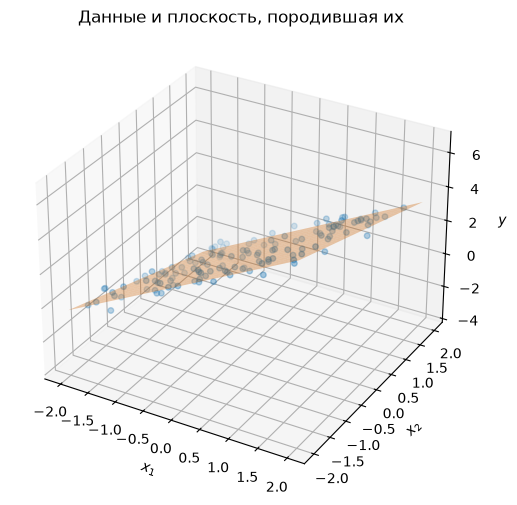
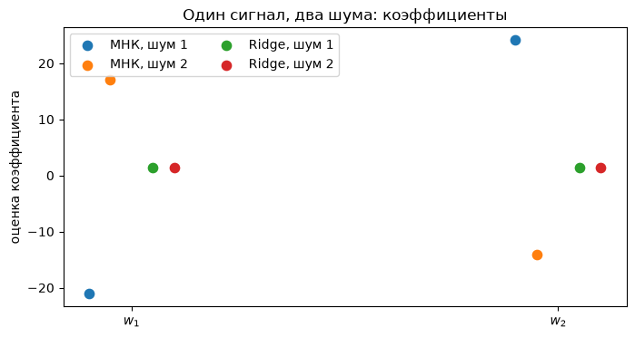
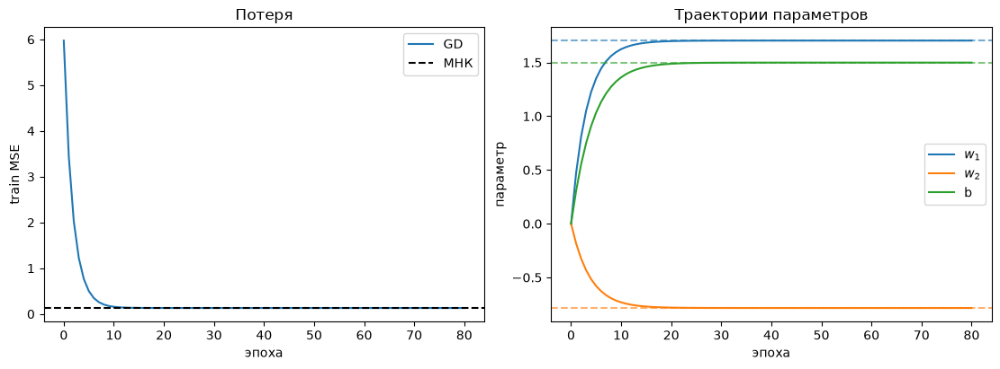
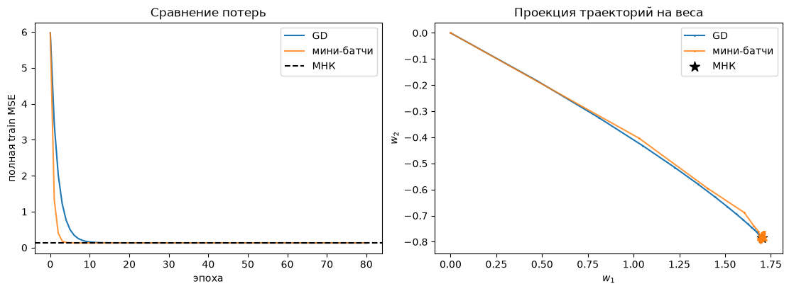
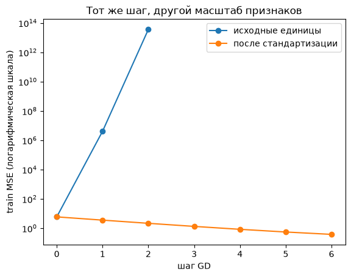

Семинар 2 · Линейная регрессия: решение и оптимизация
Материал можно читать без запуска Python. Код и сохранённые результаты показаны в порядке тетради; для запуска упражнений скачайте исходный файл.
Скачать .ipynb ↓Формат: управляемая демонстрация на 90 минут. Перед ключевыми запусками сначала сформулируйте прогноз, затем сравните его с результатом.
Сегодня одна модель проходит три пути: аналитическое решение, полный градиент и случайные мини-батчи. На почти совпадающих признаках увидим, почему точный прогноз не гарантирует устойчивых коэффициентов.
Маршрут: синтетические данные → метод наименьших квадратов → зависимые признаки и регуляризация → GD/SGD → масштабирование и sklearn.
Ритм занятия
| Время | Блок | Что предсказать до запуска |
|---|---|---|
| 0–20 мин | Данные и прямая/плоскость | Какие роли у коэффициентов и свободного члена? |
| 20–40 мин | МНК и зависимые признаки | Что произойдёт с коэффициентами при почти одинаковых столбцах? |
| 40–55 мин | Регуляризация | Что уменьшится: ошибка на train или величина весов? |
| 55–75 мин | GD и мини-батчи | Как выглядят траектории потерь? |
| 75–90 мин | Масштаб и sklearn |
Почему масштабирование обучают только на train? |
Нужны numpy, matplotlib и scikit-learn. Все данные создаются в ноутбуке; фиксированный seed делает запуски воспроизводимыми.
import matplotlib.pyplot as plt
import numpy as np
import sklearn
from sklearn.linear_model import LinearRegression, Ridge
from sklearn.metrics import mean_squared_error
from sklearn.model_selection import train_test_split
from sklearn.pipeline import make_pipeline
from sklearn.preprocessing import StandardScaler
SEED = 42
rng = np.random.default_rng(SEED)
np.set_printoptions(precision=3, suppress=True)
print(f"NumPy {np.__version__}; scikit-learn {sklearn.__version__}; seed {SEED}")NumPy 2.5.3; scikit-learn 1.9.1; seed 42
1. Маленький мир с известным ответом
Как и в лекциях, m — число наблюдений, n — число признаков. Матрица \mathbf X\in\mathbb R^{m\times n} содержит объекты по строкам. Вектор \mathbf x^{(i)} описывает объект i, его координата x_j^{(i)} — признак j, а y^{(i)} — скалярный ответ. Все ответы вместе образуют вектор \mathbf y.
Создадим два признака и ответы \mathbf y=\mathbf X\mathbf w_*+b_*\mathbf1+\boldsymbol\varepsilon, где \mathbf w_*=(1.7,-0.8)^\mathsf T, b_*=1.5, а шум имеет нулевое среднее. Здесь \mathbf X содержит только признаки; столбец единиц для свободного члена добавим последним, как в слайдах. Отложим test до оценки обученной модели. В коде n_samples — число наблюдений, то есть m, а не число признаков.
До запуска: как изменится плоскость, если увеличить только b? Что изменится при увеличении w_1?
n_samples = 180
w_true = np.array([1.7, -0.8])
b_true = 1.5
X = rng.uniform(-2, 2, size=(n_samples, 2))
y = X @ w_true + b_true + rng.normal(0, 0.35, n_samples)
X_train, X_test, y_train, y_test = train_test_split(
X, y, test_size=0.25, random_state=SEED
)
print(f"train: {X_train.shape}; test: {X_test.shape}")
print(f"true weights: {w_true}; true bias: {b_true}")
fig = plt.figure(figsize=(8, 6))
ax = fig.add_subplot(projection="3d")
ax.scatter(X_train[:, 0], X_train[:, 1], y_train, s=16, alpha=0.65, label="train")
grid_1, grid_2 = np.meshgrid(np.linspace(-2, 2, 18), np.linspace(-2, 2, 18))
plane = w_true[0] * grid_1 + w_true[1] * grid_2 + b_true
ax.plot_surface(grid_1, grid_2, plane, color="tab:orange", alpha=0.35)
ax.set(xlabel="$x_1$", ylabel="$x_2$", zlabel="$y$", title="Данные и плоскость, породившая их")
plt.show()train: (135, 2); test: (45, 2) true weights: [ 1.7 -0.8]; true bias: 1.5

Разбор
Свободный член сдвигает плоскость вдоль оси ответа, не меняя наклонов. Коэффициент при первом признаке меняет наклон в направлении этой оси. Шум объясняет, почему точки не лежат ровно на плоскости.
2. МНК: от ошибки к коэффициентам
Допишем столбец единиц справа: \tilde{\mathbf X}=[\mathbf X\ \mathbf1]. Вектор всех параметров \boldsymbol\theta=\tilde{\mathbf w}=(w_1,w_2,b)^\mathsf T имеет тот же порядок, что в лекции. В коде расширенная матрица называется A_train, а вектор параметров — theta_ols.
Потеря одного объекта — \ell(y^{(i)},\hat y^{(i)})=(y^{(i)}-\hat y^{(i)})^2. Для m обучающих наблюдений минимизируем среднюю квадратичную ошибку:
Нормальное уравнение: \tilde{\mathbf X}^\mathsf T\tilde{\mathbf X}\hat{\boldsymbol\theta}=\tilde{\mathbf X}^\mathsf T\mathbf y. Формула \hat{\boldsymbol\theta}=(\tilde{\mathbf X}^\mathsf T\tilde{\mathbf X})^{-1}\tilde{\mathbf X}^\mathsf T\mathbf y применима только при обратимости матрицы. На практике lstsq находит решение без явного обращения. Параметры оцениваем только на train; test используем для оценки, а не для выбора настроек.
До запуска: совпадут ли найденные параметры в точности с \mathbf w_*,b_*? Почему?
A_train = np.column_stack([X_train, np.ones(len(X_train))])
A_test = np.column_stack([X_test, np.ones(len(X_test))])
theta_ols, *_ = np.linalg.lstsq(A_train, y_train, rcond=None)
train_pred = A_train @ theta_ols
test_pred = A_test @ theta_ols
print(f"true (w1, w2, b): {np.r_[w_true, b_true]}")
print(f"OLS (w1, w2, b): {theta_ols}")
print(f"train MSE: {mean_squared_error(y_train, train_pred):.4f}")
print(f"test MSE: {mean_squared_error(y_test, test_pred):.4f}")
assert np.linalg.norm(A_train.T @ (A_train @ theta_ols - y_train)) < 1e-9true (w1, w2, b): [ 1.7 -0.8 1.5] OLS (w1, w2, b): [ 1.704 -0.784 1.499] train MSE: 0.1301 test MSE: 0.1124
Разбор
Шум и конечный размер выборки меняют оценку коэффициентов. Небольшое расхождение с истинными весами не означает ошибку метода. Проверка нормального уравнения выше относится к train; test не участвовал в вычислении параметров.
3. Почти одинаковые признаки
Если x_2=x_1, то отдельные w_1 и w_2 нельзя восстановить: прогноз зависит от их суммы. При x_2\approx x_1 задача становится чувствительной к шуму. Чтобы увидеть это, обучим две модели на тех же признаках, но с двумя независимыми реализациями шума в цели.
До запуска: если оба набора прогнозов похожи, обязательно ли будут похожи коэффициенты? Сначала проверим точное совпадение признаков, затем почти совпадение.
exact_x = np.linspace(-1, 1, 6)
A_exact = np.column_stack([exact_x, exact_x, np.ones(len(exact_x))])
y_exact = 1 + 3 * exact_x
exact_theta, *_ = np.linalg.lstsq(A_exact, y_exact, rcond=None)
print(f"exact duplicate: rank={np.linalg.matrix_rank(A_exact)} of 3; lstsq weights={exact_theta[:-1]}")
print(f"alternative (1, 2) produces the same predictions: {np.allclose(A_exact @ [1, 2, 1], y_exact)}")
cor_rng = np.random.default_rng(SEED + 1)
X_cor = np.column_stack([
cor_rng.normal(size=160),
np.zeros(160),
])
X_cor[:, 1] = X_cor[:, 0] + cor_rng.normal(0, 0.001, len(X_cor))
cor_signal = X_cor @ np.array([2.0, 1.0]) + 1.0
Y_cor = [cor_signal + cor_rng.normal(0, 0.2, len(X_cor)) for _ in range(2)]
A_cor = np.column_stack([X_cor, np.ones(len(X_cor))])
ols_cor = [np.linalg.lstsq(A_cor, target, rcond=None)[0] for target in Y_cor]
print(f"condition number of A: {np.linalg.cond(A_cor):.0f}")
for i, theta in enumerate(ols_cor, 1):
print(f"noise {i}: weights={theta[:-1]}, sum={theta[:-1].sum():.3f}, train MSE={mean_squared_error(Y_cor[i-1], A_cor @ theta):.4f}")
print(f"RMS difference between fitted predictions: {np.sqrt(np.mean((A_cor @ ols_cor[0] - A_cor @ ols_cor[1])**2)):.4f}")exact duplicate: rank=2 of 3; lstsq weights=[1.5 1.5] alternative (1, 2) produces the same predictions: True condition number of A: 2214 noise 1: weights=[-21.106 24.102], sum=2.996, train MSE=0.0379 noise 2: weights=[ 17.069 -14.085], sum=2.984, train MSE=0.0340 RMS difference between fitted predictions: 0.0486
Разбор
Когда столбцы почти повторяются, изменение одного веса можно компенсировать изменением другого. Поэтому близость предсказаний на наблюдаемой области не доказывает устойчивость каждого коэффициента. Большое число обусловленности здесь указывает на чувствительность задачи к возмущениям.
Регуляризация: ограничиваем размер весов
Штрафуем только коэффициенты признаков, не свободный член:
Для \tilde{\mathbf X}=[\mathbf X\ \mathbf1] получаем
где \mathbf D=\operatorname{diag}(1,1,0): последний параметр — свободный член. В sklearn.Ridge параметр alpha соответствует m\lambda, потому что её критерий содержит сумму квадратов ошибок, а не MSE. Здесь m — число наблюдений конкретного обучающего эксперимента.
До запуска: сравните разброс отдельных весов и ошибку на обучении. Может ли штраф ухудшить train MSE?
lam = 0.05
penalty = np.diag([1.0, 1.0, 0.0])
ridge_cor = [
np.linalg.solve(A_cor.T @ A_cor + len(X_cor) * lam * penalty, A_cor.T @ target)
for target in Y_cor
]
for i, theta in enumerate(ridge_cor, 1):
print(f"noise {i}: ridge weights={theta[:-1]}, sum={theta[:-1].sum():.3f}, train MSE={mean_squared_error(Y_cor[i-1], A_cor @ theta):.4f}")
check_ridge = Ridge(alpha=len(X_cor) * lam).fit(X_cor, Y_cor[0])
assert np.allclose(np.r_[check_ridge.coef_, check_ridge.intercept_], ridge_cor[0], atol=1e-8)
assert np.linalg.norm(ridge_cor[0][:-1] - ridge_cor[1][:-1]) < np.linalg.norm(ols_cor[0][:-1] - ols_cor[1][:-1])
fig, ax = plt.subplots(figsize=(8, 4))
positions = np.arange(2)
for j, (name, params) in enumerate([("МНК", ols_cor), ("Ridge", ridge_cor)]):
for i, theta in enumerate(params):
ax.scatter(positions + (j - 0.5) * 0.15 + (i - 0.5) * 0.05, theta[:-1], label=f"{name}, шум {i+1}", s=55)
ax.set_xticks(positions, ["$w_1$", "$w_2$"])
ax.set_ylabel("оценка коэффициента")
ax.set_title("Один сигнал, два шума: коэффициенты")
ax.legend(ncol=2)
plt.show()noise 1: ridge weights=[1.463 1.463], sum=2.926, train MSE=0.0433 noise 2: ridge weights=[1.459 1.459], sum=2.918, train MSE=0.0391

Разбор
Штраф удерживает веса ближе к нулю и уменьшает их изменение между двумя реализациями шума. Он может повысить train MSE, потому что оптимизирует MSE плюс штраф. Здесь проверена устойчивость коэффициентов в конкретном эксперименте; это не обещание улучшения test при любом \lambda.
4. Полный градиентный спуск
Вернёмся к первым данным и функции Q(\boldsymbol\theta)=\mathrm{MSE}. Из нулевого вектора повторяем \boldsymbol\theta_{t+1}=\boldsymbol\theta_t-\eta\nabla Q(\boldsymbol\theta_t). Полный градиент использует все train-объекты. Сравним траекторию с МНК; test при настройке шага не нужен.
До запуска: что будет с потерей при слишком большом шаге \eta? Почему маленький шаг может быть неудобен?
def mse_gradient(A, target, theta):
return 2 * A.T @ (A @ theta - target) / len(target)
learning_rate = 0.12
n_epochs = 80
theta_gd = np.zeros(A_train.shape[1])
gd_history = [theta_gd.copy()]
gd_loss = [mean_squared_error(y_train, A_train @ theta_gd)]
for _ in range(n_epochs):
theta_gd -= learning_rate * mse_gradient(A_train, y_train, theta_gd)
gd_history.append(theta_gd.copy())
gd_loss.append(mean_squared_error(y_train, A_train @ theta_gd))
gd_history = np.array(gd_history)
print(f"OLS: {theta_ols}; GD: {theta_gd}")
print(f"train MSE: {gd_loss[-1]:.4f} (GD), {mean_squared_error(y_train, train_pred):.4f} (МНК)")
fig, axes = plt.subplots(1, 2, figsize=(11, 4), constrained_layout=True)
axes[0].plot(gd_loss, label="GD")
axes[0].axhline(mean_squared_error(y_train, train_pred), color="black", ls="--", label="МНК")
axes[0].set(xlabel="эпоха", ylabel="train MSE", title="Потеря")
axes[0].legend()
for j, name in enumerate(["$w_1$", "$w_2$", "b"]):
axes[1].plot(gd_history[:, j], label=name)
axes[1].axhline(theta_ols[j], color=f"C{j}", ls="--", alpha=0.6)
axes[1].set(xlabel="эпоха", ylabel="параметр", title="Траектории параметров")
axes[1].legend()
plt.show()OLS: [ 1.704 -0.784 1.499]; GD: [ 1.704 -0.784 1.499] train MSE: 0.1301 (GD), 0.1301 (МНК)

Разбор
Для выбранного шага полный GD сходится к решению МНК: минимум у них общий. Это не правило для любого шага. Длина шага зависит от масштаба признаков и кривизны функции потерь.
5. Случайные мини-батчи
Теперь каждый шаг использует до 16 train-объектов в случайном порядке; последний мини-батч может быть короче. После каждой эпохи измеряем полную train MSE, чтобы сравнение с GD было содержательным. Шаги мини-батчей шумят; при постоянной скорости обучения траектория может колебаться вокруг минимума.
До запуска: обязана ли потеря после каждой эпохи строго уменьшаться?
sgd_rng = np.random.default_rng(SEED + 2)
batch_size = 16
sgd_rate = 0.04
theta_sgd = np.zeros(A_train.shape[1])
sgd_history = [theta_sgd.copy()]
sgd_loss = [mean_squared_error(y_train, A_train @ theta_sgd)]
for _ in range(n_epochs):
order = sgd_rng.permutation(len(y_train))
for start in range(0, len(y_train), batch_size):
batch = order[start:start + batch_size]
theta_sgd -= sgd_rate * mse_gradient(A_train[batch], y_train[batch], theta_sgd)
sgd_history.append(theta_sgd.copy())
sgd_loss.append(mean_squared_error(y_train, A_train @ theta_sgd))
sgd_history = np.array(sgd_history)
print(f"МНК train MSE: {mean_squared_error(y_train, train_pred):.4f}")
print(f"GD train MSE: {gd_loss[-1]:.4f}; SGD train MSE: {sgd_loss[-1]:.4f}")
print(f"steps per epoch: GD = 1 full batch, SGD = {int(np.ceil(len(y_train)/batch_size))} mini-batches")
fig, axes = plt.subplots(1, 2, figsize=(11, 4), constrained_layout=True)
axes[0].plot(gd_loss, label="GD")
axes[0].plot(sgd_loss, label="мини-батчи", alpha=0.8)
axes[0].axhline(mean_squared_error(y_train, train_pred), color="black", ls="--", label="МНК")
axes[0].set(xlabel="эпоха", ylabel="полная train MSE", title="Сравнение потерь")
axes[0].legend()
axes[1].plot(gd_history[:, 0], gd_history[:, 1], label="GD", marker=".", ms=2)
axes[1].plot(sgd_history[:, 0], sgd_history[:, 1], label="мини-батчи", alpha=0.8, marker=".", ms=2)
axes[1].scatter(theta_ols[0], theta_ols[1], color="black", marker="*", s=110, label="МНК")
axes[1].set(xlabel="$w_1$", ylabel="$w_2$", title="Проекция траекторий на веса")
axes[1].legend()
plt.show()МНК train MSE: 0.1301 GD train MSE: 0.1301; SGD train MSE: 0.1304 steps per epoch: GD = 1 full batch, SGD = 9 mini-batches

Разбор
На правом графике показана проекция траектории на (w_1,w_2): свободный член тоже меняется, но не показан. Одна эпоха не означает одинаковое число шагов или одинаковую вычислительную стоимость: GD делает один полный шаг, мини-батчи — несколько коротких. Этот опыт не является бенчмарком времени.
6. Масштаб признаков и sklearn
Создадим копию задачи, где второй столбец измеряется в единицах, в 100 раз меньших: его численные значения станут в 100 раз больше, а физическая зависимость y останется прежней. У GD меняется допустимый шаг. StandardScaler обучаем только на train, затем тем же преобразованием обрабатываем test. В Pipeline это правило выполняется при fit/predict автоматически.
До запуска: сравните число обусловленности до и после масштабирования. Будут ли коэффициенты в исходных и стандартизованных единицах непосредственно сравнимы?
X_train_units = X_train * np.array([1.0, 100.0])
X_test_units = X_test * np.array([1.0, 100.0])
scaler = StandardScaler().fit(X_train_units)
X_train_scaled = scaler.transform(X_train_units)
X_test_scaled = scaler.transform(X_test_units)
print(f"condition number before scaling: {np.linalg.cond(np.column_stack([X_train_units, np.ones(len(X_train))])):.1f}")
print(f"condition number after scaling: {np.linalg.cond(np.column_stack([X_train_scaled, np.ones(len(X_train))])):.1f}")
print(f"train means after scaling: {X_train_scaled.mean(axis=0)}")
print(f"test means after train scaling: {X_test_scaled.mean(axis=0)}")
ols_pipeline = make_pipeline(StandardScaler(), LinearRegression()).fit(X_train_units, y_train)
ridge_pipeline = make_pipeline(StandardScaler(), Ridge(alpha=1.0)).fit(X_train_units, y_train)
print(f"OLS pipeline test MSE: {mean_squared_error(y_test, ols_pipeline.predict(X_test_units)):.4f}")
print(f"Ridge pipeline test MSE: {mean_squared_error(y_test, ridge_pipeline.predict(X_test_units)):.4f}")
print(f"OLS predictions agree across units: {np.allclose(ols_pipeline.predict(X_test_units), test_pred, atol=1e-10)}")condition number before scaling: 113.9 condition number after scaling: 1.1 train means after scaling: [-0. 0.] test means after train scaling: [ 0.088 -0.033] OLS pipeline test MSE: 0.1124 Ridge pipeline test MSE: 0.1138 OLS predictions agree across units: True
Один и тот же шаг GD в разных единицах
Для квадратичной MSE с градиентом, содержащим 2/m, условие сходимости полного GD при положительно определённой матрице Грама:
Здесь \lambda_{\max} обозначает максимальное собственное значение; это не коэффициент регуляризации \lambda. Запустим шесть шагов GD с прежним \eta=0.12 до и после масштабирования. Если ошибка быстро растёт, остановим только этот опыт; это ожидаемый результат, а не сбой исполнения ноутбука.
До запуска: подходит ли прежний шаг для столбца, увеличенного в 100 раз?
A_units = np.column_stack([X_train_units, np.ones(len(X_train))])
A_scaled = np.column_stack([X_train_scaled, np.ones(len(X_train))])
def short_gd(A, target, rate, steps=6):
theta = np.zeros(A.shape[1])
losses = [mean_squared_error(target, A @ theta)]
for _ in range(steps):
theta -= rate * mse_gradient(A, target, theta)
losses.append(mean_squared_error(target, A @ theta))
if losses[-1] > 1e12:
break
return losses
for name, A in [("исходные единицы", A_units), ("после стандартизации", A_scaled)]:
limit = 1 / np.linalg.eigvalsh(A.T @ A / len(A))[-1]
losses = short_gd(A, y_train, learning_rate)
print(f"{name}: устойчивый шаг < {limit:.6f}; MSE {losses[0]:.2g} → {losses[-1]:.2g} за {len(losses)-1} шагов")
plt.plot(range(len(losses)), losses, marker="o", label=name)
plt.yscale("log")
plt.xlabel("шаг GD")
plt.ylabel("train MSE (логарифмическая шкала)")
plt.title("Тот же шаг, другой масштаб признаков")
plt.legend()
plt.show()исходные единицы: устойчивый шаг < 0.000081; MSE 6 → 3.7e+13 за 2 шагов после стандартизации: устойчивый шаг < 0.934848; MSE 6 → 0.38 за 6 шагов

Разбор
Масштабирование улучшает численную геометрию для итерационного метода. При обратимом аффинном преобразовании признаков меняются коэффициенты и свободный член МНК, но сохраняются прогнозы; это проверено для выбранной смены единиц. Для Ridge масштаб уже влияет и на относительную силу штрафа. Test не должен задавать средние и дисперсии преобразования: иначе сведения о нём попадут в обучение.
Итоги и exit ticket
- Почему
np.linalg.lstsqпредпочтительнее явногоinv(X.T @ X)для МНК? - Что можно и нельзя заключить о весах, если прогнозы моделей близки, а признаки почти совпадают?
- Где в формулах выше стоит множитель 1/m? Как из-за него связаны \lambda и
Ridge(alpha=...)? - Почему нельзя сравнивать коэффициенты до и после
StandardScalerпо абсолютной разнице? - Когда именно разрешено смотреть на test?
Самостоятельный опыт: поменяйте только learning_rate в блоке GD и постройте тот же график. Найдите шаг, при котором MSE перестанет устойчиво уменьшаться; верните исходное значение перед продолжением семинара.
Происхождение и ограничения
Материал переработан из исходного seminar_02_linear_regression_raw.ipynb для второго семинара курса. Ритм «прогноз → запуск → разбор», воспроизводимый seed и проверка утечки следуют первому семинару knn_validation_stability.ipynb. Выводы об устойчивости и сходимости относятся к конкретным синтетическим опытам, а не ко всем наборам данных. Формулы МНК и Ridge сопоставлены с документацией NumPy lstsq и scikit-learn Ridge.